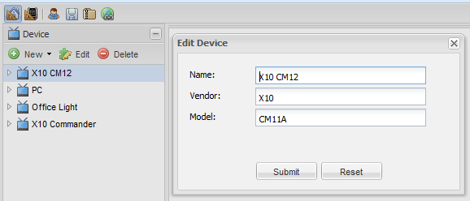
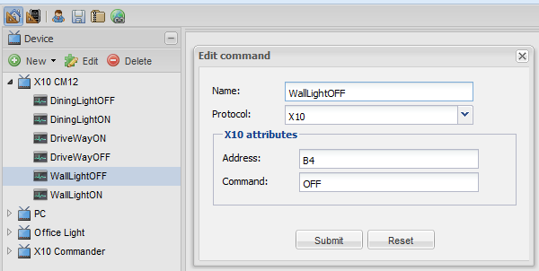

This is killing me.
I want to use OR but everything I try doesn't work.
I want to get a basic OR system working so that I understand all of the interfaces before I try and do more advanced things.
I have some X10 equipment that I use with Misterhouse and I thought this would make a simple configuration. Nope.
In the C:\OpenRemote\webapps\controller\WEB-INF\classes\config.properties file, I have set the following X10 parameter - com.port=COM1
I created a Device but here I'm not sure what is required so I put the following -

Name = X10 CM12
Vendor = X10
Model = CM11A
I created a new Command -

Name = WallLightOFF
Protocol = X10
Address = B4
Command = OFF
In the panel I assigned this to a button.
In boot.log I see the following -
DEBUG 2013-05-25 15:03:01,250 : Created object model for Command( ID = 63, Type = x10, Properties : {address=B4, name=WallLightOFF, command=OFF}).
In the dev.Log file, when I press the button on my phone, I get the following entry -
2013-05-25 15:14:57,015 WARN [HTTP-Thread-1]: Unknown X10 property '<property name = "name" value = "WallLightOFF"/>'.
I can't see in any of the logs where the X10 device is being configured/opened.
Neil.
{kind=link}
{kind=link}
|
The warning is a red herring. It is a side effect of changes made in Designer and the XML files it generates, and the extra name property (which triggers it) should be handled silently without logging the warning. The warning however has no impact in the code. The configuration itself looks correct. It's been a really long time since I've looked at X10 – the most likely cause for an issue would be access to the serial port, port locking, or something going wrong with the serial port communication. IIRC these would show up in the console output. PS. only have used X10 with Linux, so your mileage may vary. |
|
Misterhouse uses the same serial port for the X10 connection. How do I know if the port is even attempting to be setup/talked to. In the original config.properties file, it was set to a Linux port, wouldn't it always be trying to open the port on YOUR system as well? Neil. |
|
The console output. Using CATALINA_BASE: C:\OpenRemote
Using CATALINA_HOME: C:\OpenRemote
Using CATALINA_TMPDIR: C:\OpenRemote\temp
Using JRE_HOME: C:\Program Files\Java\jdk1.6.0_37
25/05/2013 4:06:59 PM org.apache.catalina.core.AprLifecycleListener init
INFO: The APR based Apache Tomcat Native library which allows optimal performance in production environments was not found on the java.library.path: C:\OpenRemote\webapps\controller\WEB-INF\lib\native
25/05/2013 4:06:59 PM org.apache.coyote.http11.Http11Protocol init
INFO: Initializing Coyote HTTP/1.1 on http-8080
25/05/2013 4:06:59 PM org.apache.catalina.startup.Catalina load
INFO: Initialization processed in 293 ms
25/05/2013 4:06:59 PM org.apache.catalina.core.StandardService start
INFO: Starting service Catalina
25/05/2013 4:06:59 PM org.apache.catalina.core.StandardEngine start
INFO: Starting Servlet Engine: Apache Tomcat/6.0.18
25/05/2013 4:06:59 PM org.apache.catalina.startup.HostConfig deployWAR
INFO: Deploying web application archive webconsole.war
25/05/2013 4:06:59 PM org.openremote.controller.bootstrap.Startup redirectJULtoLog4j
INFO: Initialized JUL to LOG4J Redirector.
INFO 2013-05-25 16:07:00,250 :
--------------------------------------------------------------------
DEPLOYING NEW CONTROLLER RUNTIME...
--------------------------------------------------------------------
INFO 2013-05-25 16:07:00,375 : No rule definitions found in 'C:\OpenRemote\webap
ps\controller\rules'.
INFO 2013-05-25 16:07:00,375 : Initialized event processor : Drools Rule Engine
ERROR 2013-05-25 16:07:00,406 : Creating sensor failed. Error : No device protoc
ol builders registered with protocol type 'udpListener'.
XML Element : <sensor xmlns="http://www.openremote.org" id="85" name="Sw1" type="switch">
<include type="command" ref="68" />
<state name="on" />
<state name="off" />
</sensor>
org.openremote.controller.exception.ConfigurationException: No device protocol builders registered with protocol type 'udpListener'.
at org.openremote.controller.command.CommandFactory.getCommand(CommandFactory.java:88)
at org.openremote.controller.model.xml.Version20SensorBuilder.parseSensorEventProducer(Version20SensorBuilder.java:419)
at org.openremote.controller.model.xml.Version20SensorBuilder.build(Version20SensorBuilder.java:286)
at org.openremote.controller.deployer.Version20ModelBuilder.buildSensorObjectModelFromXML(Version20ModelBuilder.java:773)
at org.openremote.controller.deployer.Version20ModelBuilder.buildSensorModel(Version20ModelBuilder.java:619)
at org.openremote.controller.deployer.Version20ModelBuilder.build(Version20ModelBuilder.java:537)
at org.openremote.controller.deployer.AbstractModelBuilder.buildModel(AbstractModelBuilder.java:148)
at org.openremote.controller.service.Deployer.startup(Deployer.java:760)
at org.openremote.controller.service.Deployer.startController(Deployer.java:271)
at org.openremote.controller.spring.SpringContext.initializeController(SpringContext.java:109)
at org.openremote.controller.service.ServiceContext.init(ServiceContext.
java:364)
at org.openremote.controller.bootstrap.Startup.loadServiceContext(Startup.java:85)
at org.openremote.controller.bootstrap.servlet.ServletStartup.initializeServiceContext(ServletStartup.java:190)
at org.openremote.controller.bootstrap.servlet.ServletStartup.contextInitialized(ServletStartup.java:109)
at org.apache.catalina.core.StandardContext.listenerStart(StandardContext.java:3843)
at org.apache.catalina.core.StandardContext.start(StandardContext.java:4342)
at org.apache.catalina.core.ContainerBase.addChildInternal(ContainerBase.java:791)
at org.apache.catalina.core.ContainerBase.addChild(ContainerBase.java:771)
at org.apache.catalina.core.StandardHost.addChild(StandardHost.java:525)
at org.apache.catalina.startup.HostConfig.deployDirectory(HostConfig.java:926)
at org.apache.catalina.startup.HostConfig.deployDirectories(HostConfig.java:889)
at org.apache.catalina.startup.HostConfig.deployApps(HostConfig.java:492)
at org.apache.catalina.startup.HostConfig.start(HostConfig.java:1149)
at org.apache.catalina.startup.HostConfig.lifecycleEvent(HostConfig.java:311)
at org.apache.catalina.util.LifecycleSupport.fireLifecycleEvent(LifecycleSupport.java:117)
at org.apache.catalina.core.ContainerBase.start(ContainerBase.java:1053)
at org.apache.catalina.core.StandardHost.start(StandardHost.java:719)
at org.apache.catalina.core.ContainerBase.start(ContainerBase.java:1045)
at org.apache.catalina.core.StandardEngine.start(StandardEngine.java:443)
at org.apache.catalina.core.StandardService.start(StandardService.java:516)
at org.apache.catalina.core.StandardServer.start(StandardServer.java:710)
at org.apache.catalina.startup.Catalina.start(Catalina.java:578)
at sun.reflect.NativeMethodAccessorImpl.invoke0(Native Method)
at sun.reflect.NativeMethodAccessorImpl.invoke(NativeMethodAccessorImpl.java:39)
at sun.reflect.DelegatingMethodAccessorImpl.invoke(DelegatingMethodAccessorImpl.java:25)
at java.lang.reflect.Method.invoke(Method.java:597)
at org.apache.catalina.startup.Bootstrap.start(Bootstrap.java:288)
at org.apache.catalina.startup.Bootstrap.main(Bootstrap.java:413)
ERROR [main]: Creating sensor failed. Error : No device protocol builders registered with protocol type 'udpListener'.
XML Element : <sensor xmlns="http://www.openremote.org" id="85" name="Sw1" type="switch">
<include type="command" ref="68" />
<state name="on" />
<state name="off" />
</sensor>
org.openremote.controller.exception.ConfigurationException: No device protocol builders registered with protocol type 'udpListener'.
at org.openremote.controller.command.CommandFactory.getCommand(CommandFactory.java:88)
at org.openremote.controller.model.xml.Version20SensorBuilder.parseSensorEventProducer(Version20SensorBuilder.java:419)
at org.openremote.controller.model.xml.Version20SensorBuilder.build(Version20SensorBuilder.java:286)
at org.openremote.controller.deployer.Version20ModelBuilder.buildSensorObjectModelFromXML(Version20ModelBuilder.java:773)
at org.openremote.controller.deployer.Version20ModelBuilder.buildSensorModel(Version20ModelBuilder.java:619)
at org.openremote.controller.deployer.Version20ModelBuilder.build(Version20ModelBuilder.java:537)
at org.openremote.controller.deployer.AbstractModelBuilder.buildModel(Ab
stractModelBuilder.java:148)
at org.openremote.controller.service.Deployer.startup(Deployer.java:760)
at org.openremote.controller.service.Deployer.startController(Deployer.java:271)
at org.openremote.controller.spring.SpringContext.initializeController(SpringContext.java:109)
at org.openremote.controller.service.ServiceContext.init(ServiceContext.java:364)
at org.openremote.controller.bootstrap.Startup.loadServiceContext(Startup.java:85)
at org.openremote.controller.bootstrap.servlet.ServletStartup.initializeServiceContext(ServletStartup.java:190)
at org.openremote.controller.bootstrap.servlet.ServletStartup.contextInitialized(ServletStartup.java:109)
at org.apache.catalina.core.StandardContext.listenerStart(StandardContext.java:3843)
at org.apache.catalina.core.StandardContext.start(StandardContext.java:4342)
at org.apache.catalina.core.ContainerBase.addChildInternal(ContainerBase.java:791)
at org.apache.catalina.core.ContainerBase.addChild(ContainerBase.java:771)
at org.apache.catalina.core.StandardHost.addChild(StandardHost.java:525)
at org.apache.catalina.startup.HostConfig.deployDirectory(HostConfig.java:926)
at org.apache.catalina.startup.HostConfig.deployDirectories(HostConfig.java:889)
at org.apache.catalina.startup.HostConfig.deployApps(HostConfig.java:492)
at org.apache.catalina.startup.HostConfig.start(HostConfig.java:1149)
at org.apache.catalina.startup.HostConfig.lifecycleEvent(HostConfig.java:311)
at org.apache.catalina.util.LifecycleSupport.fireLifecycleEvent(LifecycleSupport.java:117)
at org.apache.catalina.core.ContainerBase.start(ContainerBase.java:1053)
at org.apache.catalina.core.StandardHost.start(StandardHost.java:719)
at org.apache.catalina.core.ContainerBase.start(ContainerBase.java:1045)
at org.apache.catalina.core.StandardEngine.start(StandardEngine.java:443)
at org.apache.catalina.core.StandardService.start(StandardService.java:516)
at org.apache.catalina.core.StandardServer.start(StandardServer.java:710)
at org.apache.catalina.startup.Catalina.start(Catalina.java:578)
at sun.reflect.NativeMethodAccessorImpl.invoke0(Native Method)
at sun.reflect.NativeMethodAccessorImpl.invoke(NativeMethodAccessorImpl.java:39)
at sun.reflect.DelegatingMethodAccessorImpl.invoke(DelegatingMethodAccessorImpl.java:25)
at java.lang.reflect.Method.invoke(Method.java:597)
at org.apache.catalina.startup.Bootstrap.start(Bootstrap.java:288)
at org.apache.catalina.startup.Bootstrap.main(Bootstrap.java:413)
INFO 2013-05-25 16:07:00,421 : Registered sensor : Switch Sensor (Name = 'IP0_ON', ID = '103')
INFO 2013-05-25 16:07:00,437 : Startup complete.
INFO 2013-05-25 16:07:00,437 : Controller Definition File Watcher for Default Deployer started.
ERROR [Polling Sensor Thread ID = 103, Name ='IP0_ON']: could not perform UDP Event
java.net.SocketTimeoutException: Receive timed out
at java.net.PlainDatagramSocketImpl.receive0(Native Method)
at java.net.PlainDatagramSocketImpl.receive(PlainDatagramSocketImpl.java:145)
at java.net.DatagramSocket.receive(DatagramSocket.java:725)
at org.openremote.controller.protocol.socket.UDPSocketCommand.send(UDPSocketCommand.java:271)
at org.openremote.controller.protocol.socket.UDPSocketCommand.read(UDPSocketCommand.java:287)
at org.openremote.controller.model.sensor.Sensor$DeviceReader.read(Sensor.java:682)
at org.openremote.controller.model.sensor.Sensor$DeviceReader.run(Sensor.java:608)
at java.lang.Thread.run(Thread.java:662)
Exception in thread "Polling Sensor Thread ID = 103, Name ='IP0_ON'" java.lang.NullPointerException
at org.openremote.controller.model.sensor.Sensor.isUnknownSensorValue(Sensor.java:161)
at org.openremote.controller.model.sensor.StateSensor.processEvent(StateSensor.java:231)
at org.openremote.controller.model.sensor.Sensor.update(Sensor.java:338)
at org.openremote.controller.model.sensor.Sensor$DeviceReader.run(Sensor.java:608)
at java.lang.Thread.run(Thread.java:662)
25/05/2013 4:07:00 PM org.apache.coyote.http11.Http11Protocol start
INFO: Starting Coyote HTTP/1.1 on http-8080
25/05/2013 4:07:00 PM org.apache.catalina.startup.Catalina start
INFO: Server startup in 1483 ms
WARNING: RXTX Version mismatch
Jar version = RXTX-2.2pre1
native lib Version = RXTX-2.1-7
Exception in thread "Thread-8" java.lang.NullPointerException
at com.jpeterson.x10.module.CM11A.processPendingRequests(CM11A.java:1631)
at com.jpeterson.x10.module.CM11A.run(CM11A.java:1483)
at java.lang.Thread.run(Thread.java:662)
|
|
Was looking at the implementation and it does not log anything (on the OR side) unless there's an error. I can look at adding some extra log statements there while getting rid of the misleading warning message you saw. The lower level X10 implementation however is a third party implementation (which has gone over few patch rounds from various authors since it was written by the original person quite some years ago), so I will need to see if anything can be done there. Not sure I follow the last question about X10 interface being turned on/off? The assumption is that the CM11A is connected to the serial port and opening the serial port will relay the X10 commands to the powerline by CM. |
|
I meant being turned On/Off within OR. Or does YOUR system always open the serial port that is defined in YOUR config.properties file? Any clues in the last few lines of the console output? WARNING: RXTX Version mismatch |
|
Thanks, the NPE at the end is probably relevant. I'll take a peek. It's coming from the X10 library we use for serial comms. |
|
It would seem to come from a null inputstream on the serial port. Which is slightly odd itself looking at some code deeper in the RXTX library. But could indicate an issue with the port access. I could add a null guard where it is failing at the moment but unless the NPE is frivolous (caused by out-of-order initialization for example) and is indeed port access issue then the null guard will just push the explosion further down the line. It is a nasty debugging, neither the X10 lib or RXTX (for serial port access) feel particularly solid. I can try the null guard unless you can find any other reason why the physical serial port would end up giving a null inputstream back. |
|
The hardware port and Misterhouse software has been working perfectly for > 10 years, so I doubt there are any issues on this side. Neil. |
|
Well in that case there isn't much more to do. Try setting the JAVA_OPTS system variable to set JAVA_OPTS="-Dgnu.io.log.mode=PRINT_MODE" (adjust appropriately for Windows, I don't recall exact syntax) And see if that increases the log output from the RXTX library to reveal what might be the cause of a null inputstream from the serial port and the NPE in X10 (if that is indeed impacting your command send). The extra log would go to standard output, so usually on the console. |
|
As an extra, -DDEBUG=true should increase console output from X10 lib which might reveal some extra steps it is taking: > set JAVA_OPTS="-Dgnu.io.log.mode=PRINT_MODE -DDEBUG=true" |
|
INFO: Starting Coyote HTTP/1.1 on http-8080 ===================================================================================== DEBUG: Starting interface
WARNING: RXTX Version mismatch
Jar version = RXTX-2.2pre1
native lib Version = RXTX-2.2pre2
RXTXPort:setSerialPortParams(4800 8 1 0) returning
DEBUG: Interface started
DEBUG: process thread awakened
DEBUG: Transmitting CM11AStatusTransmission
Sending CM11AStatusTransmission
PC->CM11A: 0x8b
DEBUG: Received data
DEBUG: Received data
DEBUG: Received data
DEBUG: Received data
DEBUG: Received data
Bytes available: 14
Reading...
Checking number of bytes read...
Calling method to decode status...
Battery usage: 0 minutes
Interface Time: 10:47:26
Julian Day: -111
Current Day of Week: 1
Monitored House Code: A
Last Addressed Device: {3}
On/Off Status: {}
Dim Status: {}
DEBUG: Transmission of CM11AStatusTransmission complete.
DEBUG: Transmitting CM11AX10EventTransmission - X10 Address Event: house code<B>
device code<4>
Sending CM11AStandardTransmission
PC->CM11A: 0x04,0xea
Received checksum: ee
Expected checksum: ee
PC<-CM11A: 0xee
PC->CM11A: 0x00
DEBUG: Received data
PC<-CM11A: 0x55
DEBUG: Transmission of CM11AX10EventTransmission - X10 Address Event: house code
<B> device code<4> complete.
DEBUG: Transmitting CM11AX10EventTransmission - X10 Off Event: house code<B> fun
ction code<3>
Sending CM11AStandardTransmission
PC->CM11A: 0x06,0xe3
Received checksum: e9
Expected checksum: e9
PC<-CM11A: 0xe9
PC->CM11A: 0x00
PC<-CM11A: 0x55
DEBUG: Transmission of CM11AX10EventTransmission - X10 Off Event: house code<B>
function code<3> complete.
RXTXPort:removeEventListener() returning
DEBUG: Interface stopped
Exception in thread "Thread-4" java.lang.NullPointerException
at com.jpeterson.x10.module.CM11A.processPendingRequests(CM11A.java:1631
)
at com.jpeterson.x10.module.CM11A.run(CM11A.java:1483)
at java.lang.Thread.run(Thread.java:662)
|
|
Thanks, The logs look quite good, and it would seem the serial port communication is ok? From this I would expect the OFF to B3 at least to go through? The null at the end looks like a receiver thread still trying to read after the interface is stopped, could be a race, I'll have to look. It can potentially mess things up when the exception goes unhandled and propagates up the call stack in a way that doesn't allow the X10 implementation to recover. But beyond that it would look like something should go through before the NPE explodes? |
|
I've made one patch in an attempt to clean up the null pointer error you are seeing – it does look like it is potentially caused by a race condition between the threads. Can you give it a try: OpenRemote-Controller-2.1.0_ORCJAVA-350.zip And see if you get further with the log output? |
|
Terrific, thanks for looking into this for me. On a separate note, I cannot get the web interface "http://10.0.0.10:8080/webconsole/#main" working when I run Openremote on my XP (HA Server) box. Wether it be opening from the local machine or via another machine on the network. Any ideas why the XP box web interface stalls? Thanks again for your time. Neil. |
|
Webconsole loading screen stuck: there is a proposed patch described in WEBCONSOLE-56 and ORCJAVA-345. These patches should be included in the ORCJAVA-350 binary I linked above. So give it a try and see if the issue persists. Copy over and overwrite existing files will work. |
|
Hi, All good now, Thanks heaps Juha. I now have a system that does something. Neil. |
|
Ok... so I gather the X10 patch is useful and should be pushed towards release branches then? Why was updating the rxtxSerial.dll needed? |
|
Yes to question 1. In the display log it was showing I hunted down a later version which allowed the serial comms to start working. Your fix also got rid of the - I downloaded the latest version from http://rxtx.qbang.org/wiki/index.php/Download |
|
Hi Juha, In the above version you have made changes to the X10 to get it working but now Daniel is directing me to two (2) different versions that support the panStamp Largato-SWAP and Largarto-MAX. The issue is that these do not have the X10 fix you did. How do I get a combined copy of these? Is there a few files that just look after the X10 changes that I can copy into either of the versions that Daniel has? Neil. |
|
Which versions is Daniel mentioning? The 350 binary includes the lagarto integration, from CHANGES.txt: - Lagarto server (panStamps) integration (Daniel Berenguer) So unless there were changes/patches I've missed (in which case they should go into the 2.1 tree) then the basic lagarto integration should be in place in the 350 binary. Let me know if there are versions/changes/patches I've missed. |
|
Juha, Neil. |